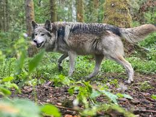
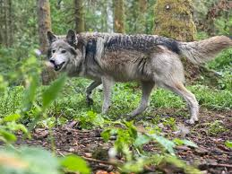

Wolf
A wolf is a carnivorous mammal.

A wolf is a carnivorous mammal.
Wolves are large canids with a strong, muscular build. They have a broad head, pointed ears, and a bushy tail. Their fur color can vary from white to gray to brown to black. Adult wolves typically weigh between 30-50 kg (66-110 lbs), with males being larger than females.
Wolves are carnivores and primarily hunt large ungulates such as deer, elk, and moose. They are also known to eat smaller mammals, birds, and occasionally fruits. Wolves hunt in packs, which allows them to bring down larger prey.
Wolves are highly social animals that live in packs consisting of an alpha male and female, their offspring, and sometimes other related individuals. Pack dynamics are complex and involve cooperative hunting, communication through vocalizations, and social bonding.
Wolves can be found in a variety of habitats, from dense forests and tundras to open grasslands and arid deserts. They are highly adaptable and can thrive in different environments as long as there is sufficient prey and space.
Wolves are classified as least concern by the International Union for Conservation of Nature (IUCN). However, some subspecies and populations face threats from habitat loss, hunting, and conflicts with livestock. Conservation efforts focus on habitat protection, monitoring populations, and managing human-wildlife conflicts.
Wolves hold significant cultural importance in many indigenous cultures and mythologies. They are often seen as symbols of strength, intelligence, and loyalty. Wolves feature prominently in folklore, literature, and art, representing various qualities and values.
 

For more information, visit the World Wildlife Fund's page on wolves.